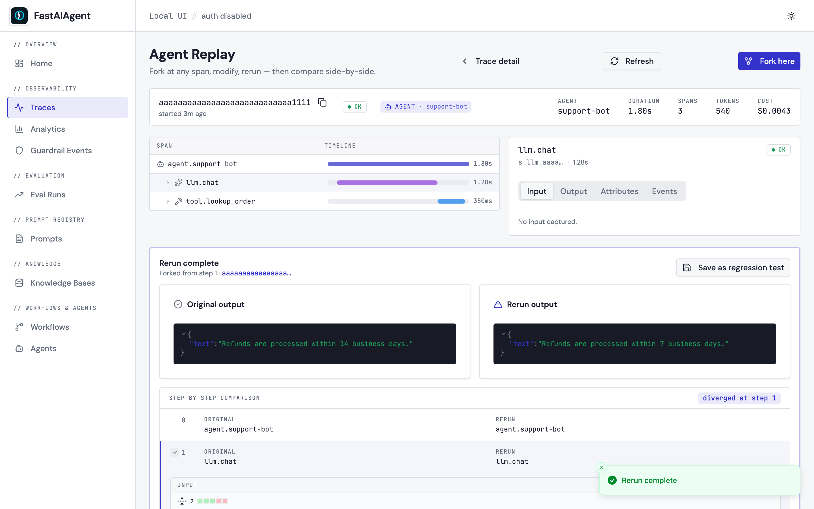

Agent Replay¶
Agent Replay lets you load any past execution trace, step through it, inspect each step's input/output/attributes, fork at any point, modify the prompt or input, and rerun from that point. This is the SDK's unique debugging feature — no other framework offers fork-and-rerun.
Why Replay?¶
When an agent fails in production — hallucinates, calls the wrong tool, gives a bad answer — you need to understand why and test a fix without re-running the entire pipeline. Replay lets you:
- Load the exact trace of the failure
- Step through to find the problematic step
- Fork at that step
- Change the prompt, input, or state
- Rerun from that point only
- Compare the original vs fixed result
Where Do Trace IDs Come From?¶
Every agent.run() automatically generates a trace. The trace ID is returned in the result:
result = agent.run("Help me with my order")
print(result.trace_id) # "b6acf1ef2c2779bbc2fcf80802ae0534"
You can also browse past traces programmatically or via CLI:
from fastaiagent.trace import TraceStore
for t in TraceStore().list_traces(last_hours=24):
print(f"{t.trace_id} {t.name} {t.status}")
Loading a Replay¶
From Local Trace Storage¶
from fastaiagent.trace.replay import Replay
# Load by trace ID (from result.trace_id or fastaiagent traces list)
replay = Replay.load("b6acf1ef2c2779bbc2fcf80802ae0534")
From a TraceData Object¶
from fastaiagent.trace.storage import TraceStore
store = TraceStore()
trace_data = store.get_trace("b6acf1ef2c2779bbc2fcf80802ae0534")
replay = Replay(trace_data)
Viewing the Summary¶
Output:
Trace: b6acf1ef2c2779bbc2fcf80802ae0534
Name: agent.support-bot
Status: OK
Spans: 4
Duration: 2025-01-15T10:30:00Z → 2025-01-15T10:30:02.5Z
Steps:
[0] agent.run
[1] llm.chat_completion
[2] tool.search_docs
[3] llm.chat_completion
Stepping Through¶
All Steps¶
steps = replay.step_through()
for step in steps:
print(f"Step {step.step}: {step.span_name}")
if step.attributes:
print(f" Attributes: {step.attributes}")
Specific Step¶
steps = replay.steps()
print(f"Total steps: {len(steps)}")
# Inspect a specific step
step = replay.inspect(2)
print(f"Name: {step.span_name}")
print(f"Span ID: {step.span_id}")
print(f"Timestamp: {step.timestamp}")
print(f"Attributes: {step.attributes}")
ReplayStep¶
| Field | Type | Description |
|---|---|---|
step |
int |
Step index (0-based) |
span_name |
str |
What happened (e.g., "llm.chat_completion", "tool.search") |
span_id |
str |
Unique span identifier |
input |
dict |
Input to this step |
output |
dict |
Output from this step |
attributes |
dict |
OTel attributes (model, tokens, tool name, etc.) |
timestamp |
str |
When this step executed |
Forking and Rerunning¶
The core debugging workflow — fork at the problem step, fix, rerun:
# Step 3 is where the LLM hallucinated
forked = replay.fork_at(step=3)
# Modify what you want to fix
forked.modify_prompt("Always cite the exact policy section number. Never guess.")
forked.modify_input({"query": "refund policy section 4.2"})
# Rerun from that point
result = forked.rerun()
print(f"New output: {result.new_output}")
print(f"Steps executed: {result.steps_executed}")
How rerun() reconstructs the agent¶
ForkedReplay.rerun() is a real re-execution, not a stub. Under the hood it:
- Finds the root
agent.{name}span in the loaded trace. - Reads the Agent Reconstruction Attributes off that span —
agent.config,agent.tools,agent.guardrails,agent.llm.config,agent.system_prompt,agent.input— and decodes them into the canonicalAgent.from_dictpayload. - Applies your
modify_prompt/modify_config/modify_inputmodifications on top of that payload. - Rebinds tool callables by name via the
ToolRegistry. Tools created withFunctionTool(name=..., fn=...)or the@tooldecorator auto-register at construction, so replay inside the same process picks them up automatically. - Builds a new
AgentviaAgent.from_dict()and callsagent.arun(new_input). A new trace is emitted for the rerun, and itstrace_idis returned onReplayResult.trace_id.
v1 scope. The rerun re-executes the agent from the top with modifications applied — it does not literally resume the LLM loop at fork_point with prior messages pre-seeded. fork_point is still recorded and used by compare() to mark where divergence logically happened, so downstream tooling sees your intent. Mid-trace resume (replaying captured messages up to fork_point then continuing from there) requires a stable per-provider message-history representation and is planned as a follow-up.
What you need for rerun() to work:
- The SDK is at a version that captures
agent.*reconstruction attributes (0.1.7+). Traces from older versions can still be loaded and stepped through, butrerun()will fail to reconstruct the agent — re-run the agent once on the new SDK to capture a rerun-capable trace. - Any Python tool callables the agent used are registered in the
ToolRegistryof the replay process. Importing the module that defines the tools is usually enough. FASTAIAGENT_TRACE_PAYLOADS=0was not set when the original trace was captured, if you want the resolved system prompt to round-trip. When payloads were off, modifications still work but the reconstructed agent uses whatever prompt your code supplies viamodify_prompt().
Available Modifications¶
| Method | What it changes |
|---|---|
modify_prompt(new_prompt) |
System prompt for the LLM call at the fork point |
modify_input(new_input) |
Input data passed to the step |
modify_config(**kwargs) |
Agent/LLM configuration (temperature, max_tokens, etc.) |
modify_state(new_state) |
Chain state (for chain replays) |
Methods return self for chaining:
result = (
replay.fork_at(step=3)
.modify_prompt("Be more precise.")
.modify_input({"context": "additional context"})
.modify_config(temperature=0.2)
.rerun()
)
Comparing Results¶
After rerunning, compare the original and fixed execution:
forked = replay.fork_at(step=3)
forked.modify_prompt("New instructions")
result = forked.rerun()
comparison = forked.compare(result)
print(f"Original steps: {len(comparison.original_steps)}")
print(f"Diverged at step: {comparison.diverged_at}")
ComparisonResult¶
| Field | Type | Description |
|---|---|---|
original_steps |
list[ReplayStep] |
Steps from the original trace |
new_steps |
list[ReplayStep] |
Steps from the rerun (if available) |
diverged_at |
int \| None |
Step index where results diverged |
ReplayResult¶
| Field | Type | Description |
|---|---|---|
original_output |
Any |
Output from the original execution |
new_output |
Any |
Output from the rerun |
steps_executed |
int |
Number of steps executed in the rerun |
trace_id |
str \| None |
Trace ID of the original execution |
Side-by-side comparison in the Local UI¶
Everything above is also available as a visual diff in the Local UI.
After running fastaiagent ui, open:
Click any span in the timeline → Fork here → pick one of the four tabs (Prompt / Input / Tool response / LLM params) → edit → Rerun from this step. The right pane fills with the forked run's spans as they arrive.
Below, a Rerun complete card appears with three pieces:
- Side-by-side output cards — the original final output and the
rerun's final output, rendered through
JsonViewer. - Step-by-step comparison grid — one row per step, with the
original span name on the left and the rerun's on the right. Rows
at or after
comparison.diverged_atare highlighted with a left border bar and a "diverged at step N" badge at the top right. - Expandable per-step diff — click the chevron on any row whose
inputs or outputs differ and a split-view diff
(powered by
react-diff-viewer-continued) expands inline, showing exactly what changed on that step.
The diff respects your current theme (light/dark). Save as
regression test appends the case to
./.fastaiagent/regression_tests.jsonl — the same file you'd write to
from code.

The replay page itself and the fork dialog are captured separately:
04-agent-replay.png— the/traces/:id/replaypage with span tree + inspector.05-replay-fork-dialog.png— the Fork-and-rerun dialog with its four tabs.
{kind=link}
{kind=link}
Clickable walkthrough¶
- From any trace on
/traces, click Open in Replay (or navigate directly to/traces/<id>/replay). - Click the span you want to branch from. The inspector on the right shows its inputs, outputs, attributes, and events.
- Click Fork here. Pick the tab for the field you want to change (Prompt / Input / Tool response / LLM params).
- Edit the field. Click Rerun from this step. The UI fires three
sequential requests behind the scenes:
POST /api/replay/<id>/fork→PATCH /api/replay/forks/<fork_id>→POST /api/replay/forks/<fork_id>/rerun. - When the rerun lands, the page auto-fetches the comparison and renders the card described above.
- Click any row's chevron to see the per-step diff. Click Save as
regression test to append the case to
./.fastaiagent/regression_tests.jsonl.
End-to-end bug-fix walkthrough¶
A full scripted example — buggy prompt → fork → fix → rerun → compare
→ assert → save-as-regression → UI deep links — lives at
examples/38_replay_comparison.py.
Pair it with the Local UI page above for the visual side-by-side.
CLI Commands¶
# Show replay steps for a trace
fastaiagent replay show <trace_id>
# Inspect a specific step
fastaiagent replay inspect <trace_id> 3
Example:
$ fastaiagent replay show b6acf1ef2c27
Trace: b6acf1ef2c2779bbc2fcf80802ae0534
Name: agent.support-bot
Status: OK
Spans: 4
Steps:
[0] agent.run
[1] llm.chat_completion
[2] tool.search_docs
[3] llm.chat_completion
$ fastaiagent replay inspect b6acf1ef2c27 2
Step 2: tool.search_docs
Timestamp: 2025-01-15T10:30:01.300Z
Attributes: {'fastaiagent.tool.name': 'search_docs'}
Debugging Workflow¶
A typical debugging session:
from fastaiagent.trace import TraceStore
from fastaiagent.trace.replay import Replay
# 1. Find the failing trace
store = TraceStore()
traces = store.search("support-bot")
# Or use: fastaiagent traces list
# 2. Load and inspect
replay = Replay.load(traces[0].trace_id)
print(replay.summary())
# 3. Step through to find the problem
for step in replay.step_through():
print(f"[{step.step}] {step.span_name}: {step.attributes}")
# Step 3: LLM hallucinated the refund policy ← found it
# 4. Fork and fix
forked = replay.fork_at(step=3)
forked.modify_prompt("Always cite exact policy section numbers from the docs.")
# 5. Rerun and verify
result = forked.rerun()
print(f"Fixed output: {result.new_output}")
# 6. Compare
comparison = forked.compare(result)
print(f"Diverged at step {comparison.diverged_at}")
Error Handling¶
from fastaiagent._internal.errors import ReplayError
try:
step = replay.inspect(99)
except ReplayError as e:
print(f"Error: {e}") # "Step 99 out of range (0-3)"
try:
forked = replay.fork_at(-1)
except ReplayError as e:
print(f"Error: {e}") # "Step -1 out of range (0-3)"
Platform Replay¶
When connected to the FastAIAgent Platform, you can pull any trace from the platform (including traces from other team members) and replay locally:
import fastaiagent as fa
fa.connect(api_key="fa-...", project="my-project")
# Pull a platform trace and replay locally
replay = Replay.from_platform(trace_id="tr-abc123")
replay.step_through()
# Fork from a platform trace
forked = replay.fork_at(step=3)
forked.modify_prompt("Updated system prompt")
result = forked.rerun()
Next Steps¶
- Tracing — How traces are captured and stored
- Chains Checkpointing — Resume failed chains from checkpoints
- Evaluation — Systematically test agent quality